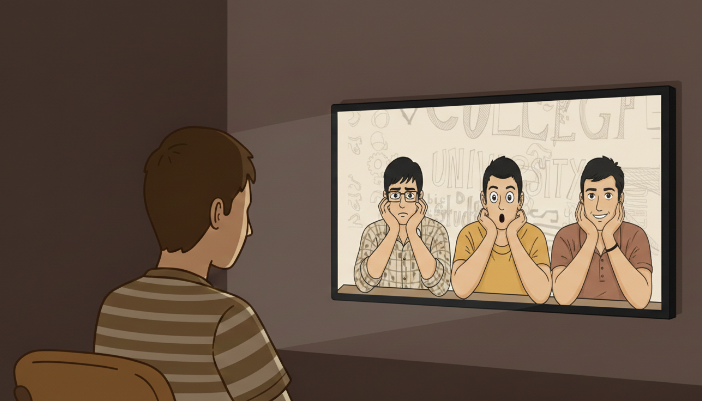

Movie Analysis: 3 Idiots

THE 3 CHARACTERS IN THE MOVIE
Rancho
The film 3 Idiots introduces Rancho as one of the most remarkable and influential students at the engineering college where the story takes place. From the beginning, he stands out because of the way he views education and life. While many students focus on grades, competition, and academic pressure, Rancho emphasizes understanding concepts and enjoying the learning process. His character represents curiosity, creativity, and courage in a system that often rewards memorization rather than true understanding. Rancho’s personality, beliefs, and actions influence the people around him, especially his close friends Farhan and Raju. Through his character, the film presents a powerful message about the true purpose of education and the importance of pursuing knowledge with passion.
Rancho is portrayed as a highly intelligent student who learns not because he is forced to but because he genuinely enjoys discovering how things work. Unlike many students who memorize definitions and formulas simply to pass exams, Rancho wants to understand the deeper meaning behind every concept. When professors explain technical terms in complicated ways, he often simplifies them by explaining their practical purpose. This shows that his intelligence is not limited to academic performance but extends to real-life understanding and creativity. His curiosity allows him to explore ideas freely, and this makes him a unique presence in the classroom.
Another defining aspect of Rancho’s character is his willingness to question authority and challenge traditional teaching methods. In the engineering college depicted in the film, the education system is strict and competitive. Students are expected to follow instructions without questioning them. Rancho refuses to accept this approach. Instead, he asks questions whenever he believes something does not make sense. His actions sometimes cause conflict with the college director, who represents the rigid academic system. However, Rancho continues to express his opinions because he believes that questioning ideas is essential to learning. This attitude demonstrates his confidence and his commitment to intellectual freedom.
Rancho’s philosophy about education is one of the most important elements of his character. He believes that education should focus on curiosity and understanding rather than fear and competition. Many students in college are constantly anxious about rankings and grades because they believe their future depends entirely on academic performance. Rancho encourages his friends to change their perspective. He tells them that success should not be chased directly. Instead, students should focus on becoming excellent at what they do. According to him, if a person pursues excellence and genuine learning, success will eventually follow. This belief becomes one of the central messages of the film and shows how Rancho views knowledge as something meaningful rather than merely a requirement for career advancement.
In addition to his intellectual qualities, Rancho is also known for his creativity and problem-solving skills. He has the ability to look at problems from different perspectives and find innovative solutions. Throughout the story, he demonstrates this ability by applying engineering concepts to practical situations. Rather than simply repeating what he learned in textbooks, he experiments with ideas and tries to create useful applications. This mindset reflects the true spirit of engineering and innovation. Rancho shows that knowledge becomes powerful when it is used creatively to improve everyday life.
Rancho’s character is not only defined by his intelligence and creativity but also by his strong sense of friendship and compassion. His relationship with his two closest friends, Farhan and Raju, highlights his supportive and caring personality. Farhan struggles with the pressure of studying engineering even though his real dream is to become a wildlife photographer. Rancho encourages him to follow his passion and reminds him that happiness is more important than simply meeting societal expectations. By motivating Farhan to confront his fears and communicate honestly with his father, Rancho helps him gain the courage to pursue his dreams.
Similarly, Rancho supports Raju, who faces extreme financial pressure from his family. Raju believes that failure in college would ruin his family’s future, which causes him constant anxiety and fear. Rancho tries to help him overcome this mindset by teaching him that fear often prevents people from performing at their best. He encourages Raju to trust his abilities and face challenges with confidence rather than panic. Rancho’s encouragement eventually helps Raju develop a stronger sense of self-belief. Through these interactions, the film shows that Rancho is not only a brilliant student but also a loyal and compassionate friend who genuinely cares about the well-being of others.
Another important aspect of Rancho’s character is his optimism. Even when situations become stressful or difficult, he maintains a calm and positive attitude. He often reminds his friends not to let fear control their actions. This mindset is symbolized by his belief that one should remain confident and trust that problems can be solved with patience and determination. His optimism inspires the people around him and helps them handle the intense pressure of college life. By maintaining this outlook, Rancho demonstrates emotional strength as well as intellectual brilliance.
Rancho also represents independence and individuality. In a highly competitive environment where students constantly compare themselves to one another, he chooses not to participate in unnecessary competition. Instead of focusing on rankings, he focuses on understanding concepts and improving his skills. This independence allows him to stay true to his beliefs even when others disagree with him. His actions challenge the traditional idea that success must always be measured through grades and awards. Rancho shows that real success can also come from personal growth, creativity, and meaningful contributions to society.
Furthermore, Rancho’s influence extends beyond his immediate circle of friends. His ideas gradually affected many other students in the college. By encouraging curiosity and independent thinking, he inspires others to question the limitations of the education system. Some students begin to realize that learning should not be driven by fear of failure but by the desire to discover and innovate. Rancho’s example shows that one individual can create positive change simply by staying committed to their values and beliefs.
Overall, Rancho is a character who symbolizes the true spirit of learning. His curiosity, intelligence, creativity, and compassion make him one of the most memorable characters in the film. Through his actions and philosophy, he challenges the rigid educational system and encourages students to pursue knowledge with passion and courage. He demonstrates that education should not be limited to memorizing information but should involve understanding, creativity, and personal growth. Rancho’s character serves as a reminder that success becomes meaningful when it is built on genuine knowledge and a desire to improve both oneself and the world.
Farhan
Another important character in the film 3 Idiots is Farhan Qureshi. He is one of Rancho’s closest friends and serves as the narrator of much of the story. Through Farhan’s perspective, the audience is able to understand the experiences, struggles, and growth of the three main characters during their time in engineering college. Farhan represents many students who follow a career path not because they want to, but because they feel obligated to meet their parents’ expectations. His character highlights the conflict between personal passion and family responsibility, which is a common challenge faced by many young people.
Farhan is introduced as a friendly, thoughtful, and loyal person. Among the three friends, he is often the most emotionally expressive. He values friendship deeply and is always willing to support Rancho and Raju during difficult situations. His warm personality helps strengthen the bond between the three characters. While Rancho is known for his bold ideas and confidence, Farhan plays the role of a supportive companion who listens, reflects, and learns from the people around him. This makes him a relatable character for many viewers because he reacts to challenges in a realistic and emotional way.
Despite being an engineering student, Farhan’s true passion lies in wildlife photography. Since he was young, he has been fascinated by animals and nature. He dreams of traveling and capturing photographs of wildlife in their natural habitats. However, his father strongly believes that engineering is a more secure and respectable career. Because of this pressure, Farhan enrolls in engineering college even though his heart is not fully committed to the field. This situation creates an internal conflict within him. He studies hard and tries to perform well, but he constantly feels that he is not pursuing the life he truly wants.
Farhan’s struggle reflects the reality faced by many students who feel forced to choose practical careers instead of following their passions. In many societies, parents encourage their children to pursue professions that promise financial stability and social status. While these intentions often come from love and concern, they can sometimes prevent young people from exploring their own talents and interests. Farhan’s character illustrates how this pressure can create emotional stress and uncertainty about the future. Even though he respects his father and understands his expectations, he cannot ignore his desire to pursue photography.
Throughout the film, Rancho plays a major role in influencing Farhan’s perspective on life. Rancho believes that a person should follow what they are truly passionate about because passion leads to excellence and happiness. He encourages Farhan to think honestly about his goals and not to live his life simply trying to satisfy others. Rancho reminds him that if he continues studying something he does not love, he may never feel truly fulfilled. These conversations slowly inspire Farhan to reconsider his decisions and think about what kind of future he really wants.
Farhan’s character development becomes more evident as the story progresses. At first, he is hesitant to confront his father about his true feelings. He fears disappointing his family and losing their support. However, after spending time with Rancho and witnessing the consequences of extreme academic pressure, he begins to realize that living an unfulfilled life would also be a mistake. This realization gives him the courage to express his true passion. One of the most important moments in his character arc occurs when he finally tells his father that he wants to become a wildlife photographer. This conversation is emotional and difficult, but it represents a turning point in Farhan’s life.
By speaking honestly with his father, Farhan demonstrates personal growth and courage. Instead of silently accepting a path that makes him unhappy, he takes responsibility for his own dreams. His father eventually understands his feelings and allows him to pursue photography. This outcome shows that open communication and honesty can help resolve conflicts between personal ambition and family expectations. Farhan’s journey teaches viewers that it is important to pursue a career that aligns with one’s interests and talents, even if doing so requires difficult conversations and decisions.
Farhan’s friendship with Rancho and Raju also plays a significant role in shaping his character. The three friends support one another through academic stress, personal problems, and moments of uncertainty. Farhan often acts as the emotional connection within the group. He listens to Raju’s worries about his family and respects Rancho’s unconventional ideas about education. His loyalty and kindness strengthen their bond and show the importance of friendship during challenging times. Through these relationships, Farhan learns valuable lessons about confidence, independence, and the courage to follow one’s dreams.
Another defining quality of Farhan is his reflective nature. Unlike Rancho, who confidently challenges authority, Farhan often takes time to observe and think before acting. This reflective attitude allows him to understand the perspectives of different people, including his father, his professors, and his friends. His ability to reflect on his experiences helps him grow as a person. By observing Rancho’s fearless approach to learning and life, Farhan gradually develops the confidence to question his own choices and pursue a path that aligns with his true interests.
Farhan’s character also emphasizes the theme of self-discovery. At the beginning of the film, he feels uncertain about his identity because he is following a path chosen for him by someone else. As the story progresses, he begins to understand himself better and recognize what truly motivates him. This process of self-discovery is an important part of growing into adulthood. Farhan learns that happiness and success are not determined only by external achievements but also by personal fulfillment and passion.
In the end, Farhan represents the courage required to follow one’s dreams despite social expectations. His journey shows that success should not be defined solely by traditional career paths but also by the ability to pursue what genuinely inspires a person. Through his character, the film encourages viewers to reflect on their own goals and to consider whether they are following a path that truly aligns with their passions.
Overall, Farhan Qureshi is a character who embodies emotional depth, loyalty, and personal growth. His struggle between family expectations and personal ambition reflects a challenge faced by many students around the world. Through his friendship with Rancho and Raju, he gains the confidence to embrace his true interests and pursue a meaningful career. His transformation demonstrates that following one’s passion requires courage, honesty, and the willingness to take responsibility for one’s own future.
Raju
The third major character in the film 3 Idiots is Raju Rastogi. Among the three friends, Raju represents the struggles of students who come from financially disadvantaged backgrounds and carry heavy responsibilities for their families. His character shows how poverty, fear of failure, and social pressure can greatly affect a student’s mindset and behavior. While Rancho approaches education with curiosity and Farhan struggles with pursuing his passion, Raju’s main concern is survival and securing a stable future for his family. His story reflects the reality faced by many students who view education as their only opportunity to escape poverty.
Raju comes from a very poor household. His father is seriously ill and unable to work, while his mother struggles to support the family. In addition, Raju has a sister whose future also depends on the family’s financial situation. Because of these circumstances, Raju feels an overwhelming sense of responsibility to succeed academically and secure a high paying job after graduation. For him, failure in college is not just a personal disappointment but a potential disaster for his entire family. This pressure influences nearly every decision he makes throughout the story.
Due to the difficult conditions at home, Raju develops a fearful and anxious personality. Unlike Rancho, who is confident and relaxed, Raju constantly worries about his grades, his future career, and the expectations placed upon him. He believes that one mistake could destroy his chances of success. This intense fear of failure often prevents him from taking risks or thinking creatively. Instead, he focuses on memorizing information and strictly following the rules of the academic system because he believes this is the safest way to achieve good results.
Another notable aspect of Raju’s character is his strong belief in superstition. Because he feels powerless to control many aspects of his life, he begins to rely on lucky charms and religious symbols for protection and success. He wears several rings on his fingers and performs various rituals in the hope that they will bring him good fortune. These habits reflect his deep anxiety and lack of confidence. Rather than trusting his abilities, he places his faith in external forces that he believes might influence his destiny. This behavior also illustrates how fear can sometimes lead people to depend on irrational solutions.
Despite his fears, Raju is a hardworking and determined student. He studies diligently and tries to follow the expectations of his professors because he believes that academic success is the only path that can improve his family’s situation. His dedication shows how deeply he cares about his loved ones. Unlike some students who pursue education only for personal ambition, Raju views his education as a responsibility toward his family. He wants to provide financial stability and ensure that his parents and sister can live more comfortably in the future.
Raju’s friendship with Rancho and Farhan plays a significant role in his personal journey. At first, he struggles to understand Rancho’s relaxed attitude toward grades and competition. Raju believes that every exam and every ranking is extremely important, so he sometimes feels frustrated when Rancho encourages him to focus less on fear and more on learning. However, over time, Raju begins to realize that his constant anxiety is affecting his health and happiness. Rancho’s influence slowly helps him reconsider the way he approaches life and education.
One of the most important aspects of Raju’s character development is his gradual transformation from fear to courage. Throughout the film, he faces several situations that challenge his mindset and force him to confront his insecurities. These experiences push him to reflect on whether his fear is actually helping him succeed or preventing him from reaching his true potential. Rancho encourages him to believe that confidence and honesty are more powerful than constant worry and superstition.
A critical turning point in Raju’s story occurs when he faces a situation that requires him to stand up for himself and take responsibility for his choices. During this moment, he realizes that living in constant fear will not solve his problems. Instead, he must trust his abilities and face challenges directly. This realization marks a significant step in his personal growth. By choosing courage over fear, Raju begins to develop a stronger sense of self belief and independence.
As Raju gains confidence, his personality gradually changes. He becomes less dependent on superstitions and begins to rely more on his own efforts and abilities. This transformation highlights one of the key messages of the film, which is that fear often limits a person’s potential. When individuals learn to overcome their fears and believe in themselves, they can achieve far more than they initially thought possible. Raju’s journey demonstrates that personal growth often requires confronting uncomfortable truths and making difficult decisions.
Raju’s character also emphasizes the impact of social and economic pressures on students. While Rancho and Farhan face their own challenges, Raju’s situation is particularly intense because his family’s well being depends on his success. This reality explains why he experiences so much anxiety and why he feels desperate to achieve stability through education. His story reminds viewers that not all students have the same opportunities or support systems. Some must carry responsibilities that make their academic journey far more stressful and demanding.
At the same time, Raju’s story offers hope and inspiration. Even though he begins the film as a fearful and insecure individual, he eventually learns to face life with greater courage. His transformation shows that people are capable of change when they receive encouragement and support from others. Rancho’s influence helps him understand that confidence and honesty are more valuable than blind obedience and superstition. By learning this lesson, Raju becomes stronger both emotionally and mentally.
Another important theme reflected in Raju’s character is the power of friendship. Without the support of Rancho and Farhan, he might have remained trapped in his cycle of fear and anxiety. Their friendship provides him with encouragement, guidance, and emotional support during some of the most difficult moments of his life. This bond demonstrates how meaningful relationships can help individuals overcome personal challenges and grow into more confident versions of themselves.
Overall, Raju Rastogi is a character who represents the struggles faced by many students living under financial and social pressure. His fear of failure, reliance on superstition, and constant anxiety reflect the heavy burden he carries for his family. However, his story is not only about hardship but also about personal growth and resilience. Through the influence of friendship and self reflection, he learns to overcome his fears and develop confidence in his abilities.
In conclusion, Raju’s character highlights the importance of courage, self belief, and perseverance. While he begins the film as a frightened and uncertain student, he gradually transforms into someone who is willing to face challenges with determination. His journey illustrates that success is not only about academic achievement but also about personal growth and the ability to confront one’s fears. Through Raju’s experiences, the film reminds viewers that even in the face of great pressure and uncertainty, it is possible to find strength and move forward with hope.
Whose character would you want to be ? Why?
Education is often considered the foundation of a successful life. Many students spend years studying to achieve good grades, secure a respected career, and meet the expectations of their parents and society. In the Indian context, this pressure is especially intense, where engineering, medicine, and other high-status professions are viewed as essential for success. The film 3 Idiots explores these pressures through the lives of three engineering students, each of whom approaches life, learning, and success in a unique way. The story takes place in a prestigious engineering college, where students are constantly evaluated through exams, grades, and rankings. The narrative highlights the struggles, aspirations, and personal growth of the students as they navigate academic challenges, societal expectations, and personal dreams. By focusing on friendship, personal development, and the pursuit of knowledge, the film conveys that education should be more than memorizing information—it should be about understanding, creativity, and self-discovery.
At the center of the story are three main characters: Rancho, Farhan, and Raju. Each of these characters represents a different perspective on education and life. Rancho, or Ranchoddas Shamaldas Chanchad, is the most unconventional of the three. He believes that learning should be about curiosity, creativity, and understanding rather than rote memorization or blind obedience. Rancho questions traditional educational methods, inspires his peers to think independently, and demonstrates that genuine knowledge comes from passion rather than fear of failure. Farhan Qureshi represents students who struggle to reconcile their personal dreams with family expectations. While he is talented and capable, Farhan initially studies engineering to fulfill his father’s wishes, even though his true passion lies in wildlife photography. His story highlights the challenges of balancing parental expectations and personal ambitions, a conflict familiar to many students. Raju Rastogi, on the other hand, comes from a financially disadvantaged background. His primary concern is to succeed academically to secure a stable future for his family. Raju’s anxiety and fear of failure illustrate how social and economic pressures can shape a student’s mindset and limit their confidence. Together, these three characters offer a comprehensive look at the pressures and opportunities faced by students in a highly competitive educational system.
The film uses humor, drama, and emotional storytelling to convey deeper messages about learning, friendship, and self-discovery. It emphasizes that education should be meaningful, practical, and oriented toward personal growth rather than blind adherence to rules. Rancho, Farhan, and Raju each face challenges that test their courage, creativity, and values. Through their experiences, the film encourages viewers to reflect on the purpose of education, the importance of following one’s passions, and the role of friendship in supporting personal growth. The characters’ journeys also highlight the significance of resilience, independent thinking, and the courage to challenge societal norms.
This blog will focus on describing the three main characters in detail, exploring their personalities, struggles, and philosophies. It will then explain which character I would most want to be and why, based on the qualities and values they embody. By analyzing Rancho, Farhan, and Raju, this entry will demonstrate how the film delivers important lessons about learning, ambition, and life itself, making it more than just a story about college students—it is a story about the principles that guide how people approach challenges, pursue knowledge, and live meaningful lives.
Among the three main characters in the film 3 Idiots, the character I would most want to be is Rancho, or Ranchoddas Shamaldas Chanchad. Rancho stands out as an individual who embodies the principles of curiosity, creativity, courage, and compassion. His approach to education, friendship, and life itself is inspiring and provides a model of how one can pursue excellence without succumbing to fear, competition, or societal pressure. Rancho is not only a brilliant student but also a visionary thinker who challenges the traditional expectations of the educational system. His personality and philosophy make him the character I most admire and wish to emulate in my own life.
One of the primary reasons I would choose to be at Rancho is his love for learning. Unlike many students who focus solely on grades, rankings, or external validation, Rancho studies out of genuine curiosity and a desire to understand the world around him. He does not memorize concepts for the sake of passing exams; instead, he seeks to comprehend the deeper meaning behind every idea. This approach reflects a mindset that prioritizes knowledge and personal growth over competition and conformity. Rancho’s passion for learning is contagious, influencing his friends and classmates to adopt a more thoughtful and engaged approach to their studies. His love for learning demonstrates that education is most meaningful when it comes from intrinsic motivation rather than fear of failure or societal expectations.
Another characteristic that makes Rancho an admirable choice is his creativity and problem-solving ability. Rancho approaches challenges with innovation and practical thinking. In the film, he repeatedly demonstrates the ability to apply theoretical knowledge to real-life situations, whether it is in engineering projects or helping his friends navigate personal struggles. His innovative thinking is a reminder that education should not only focus on memorization but also encourage experimentation, imagination, and practical application. By thinking creatively and critically, Rancho not only succeeds academically but also makes a meaningful impact on those around him. This ability to solve problems in unique and effective ways is a quality I greatly admire and wish to develop in myself.
Rancho also embodies courage and independence of thought. Throughout the film, he is unafraid to question authority, challenge traditional norms, and express his opinions. In a highly competitive college environment where students are often fearful of contradicting professors or making mistakes, Rancho stands out as someone who values understanding over blind obedience. His courage is not reckless but grounded in conviction and rational thinking. By demonstrating that it is possible to pursue knowledge honestly and confidently, Rancho challenges the rigid educational system and inspires others to think for themselves. Choosing to be like Rancho would allow me to adopt this fearless mindset, approaching life with the confidence to challenge ideas and advocate for truth and innovation.
In addition to his intellectual qualities, Rancho is deeply compassionate and loyal. His friendship with Farhan and Raju highlights his supportive and nurturing personality. Rancho motivates Farhan to pursue his passion for wildlife photography and helps Raju overcome his fear of failure. Unlike characters who focus solely on personal gain, Rancho invests in the growth and well-being of those around him. This quality shows that true intelligence is not only measured by knowledge but also by empathy, emotional support, and the ability to inspire others. Being like Rancho would allow me to cultivate meaningful relationships, encourage friends to achieve their potential, and contribute positively to the community around me.
Rancho’s philosophy about success is another reason why he is the character I would most want to be. He believes that excellence should be the main goal, rather than chasing grades, awards, or recognition. According to Rancho, if one focuses on becoming excellent at what they do and approaches learning with genuine interest, success will naturally follow. This perspective contrasts sharply with the conventional emphasis on external markers of achievement and provides a more sustainable, fulfilling approach to life. By adopting this philosophy, I could focus on improving my abilities, pursuing my interests, and achieving meaningful accomplishments, rather than being overly concerned with superficial measures of success.
Furthermore, Rancho’s optimism and calm demeanor are qualities that make him admirable. Even in difficult circumstances, he remains positive, solution-oriented, and resilient. This attitude allows him to navigate challenges without succumbing to stress or panic. By staying calm and focused, Rancho not only manages his own difficulties but also helps his friends overcome their fears and anxieties. This emotional strength is essential for personal and professional success, and it is a quality I aspire to embody in my own life. By adopting Rancho’s calm optimism, I could face academic, social, and personal challenges with greater confidence and clarity.
Rancho’s independence and willingness to pursue his own path also make him an ideal character to emulate. In a society where students often follow conventional paths due to pressure from family, peers, or social expectations, Rancho chooses to focus on his own goals and values. He demonstrates that individuality and critical thinking are more important than conformity. By choosing to be like Rancho, I would be able to embrace my own interests, make thoughtful decisions, and approach challenges in ways that are aligned with my personal principles rather than simply following the crowd.
Finally, Rancho’s influence on others demonstrates that one individual can inspire meaningful change. His interactions with Farhan and Raju show how mentorship, encouragement, and example can transform the lives of those around him. Rancho is not only successful in his own endeavors but also empowers others to pursue their passions, overcome fear, and develop confidence. This ability to positively impact others while staying true to oneself is a quality I admire greatly and would like to cultivate.
In conclusion, Rancho is a character who embodies the ideal balance of intelligence, creativity, courage, compassion, and optimism. His love for learning, innovative problem-solving, fearless independence, and supportive nature make him a role model in both educational and personal contexts. By choosing to be like Rancho, I would embrace a mindset focused on curiosity, excellence, and meaningful success, while also fostering strong relationships and inspiring others. Rancho’s philosophy that passion and excellence naturally lead to achievement provides a powerful framework for approaching life, learning, and personal growth. For these reasons, Rancho is the character I would most want to be, as he represents the values and principles that I aspire to live by in my own journey.